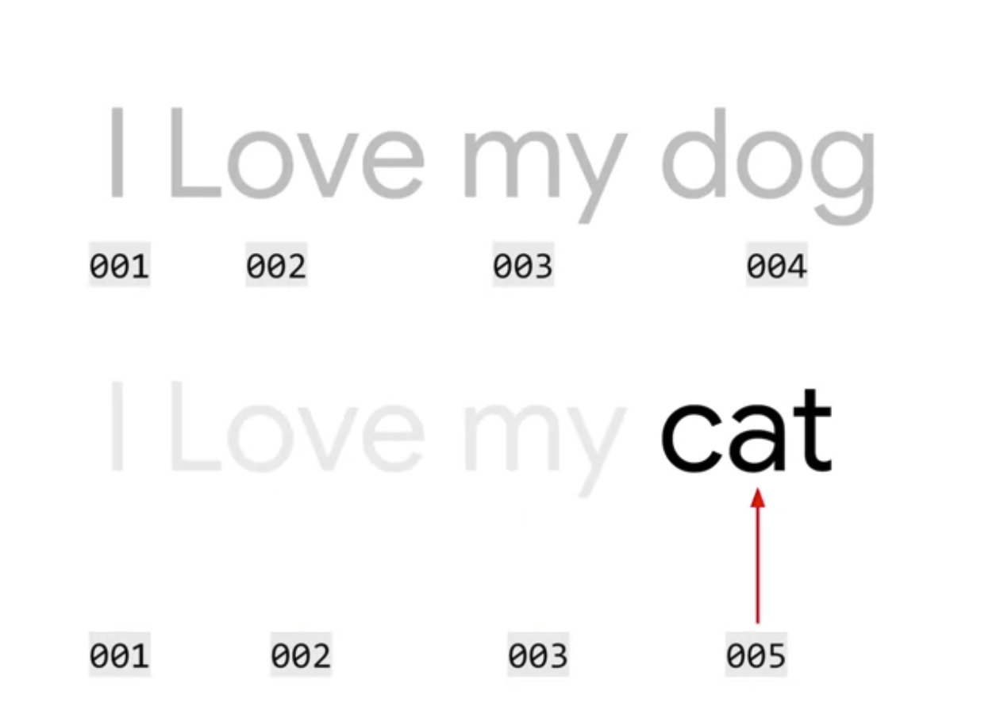

1 word based encodings,Using API to make words into numbers.

Code
from tensorflow.keras.preprocessing.text import Tokenizer# Define input sentencessentences = ['i love my dog','I, love my cat' ]# Initialize the Tokenizer class only encode max 100 wordstokenizer = Tokenizer(num_words =100)# Generate indices for each word in the corpustokenizer.fit_on_texts(sentences)# Get the indices and print it (dictionary)word_index = tokenizer.word_indexprint(word_index)
{'i': 1, 'love': 2, 'my': 3, 'dog': 4, 'cat': 5}
2 add Out-of-vocabulary tokens
Code
from tensorflow.keras.preprocessing.text import Tokenizerfrom tensorflow.keras.preprocessing.sequence import pad_sequences# Define your input textssentences = ['I love my dog','I love my cat','You love my dog!','Do you think my dog is amazing?']# Initialize the Tokenizer class,"<OOV>" make all not seen word into a number.tokenizer = Tokenizer(num_words =100, oov_token="<OOV>")# Tokenize the input sentencestokenizer.fit_on_texts(sentences)# Get the word index dictionaryword_index = tokenizer.word_index# Generate list of token sequencessequences = tokenizer.texts_to_sequences(sentences)# Print the resultprint("\nWord Index = " , word_index)print("\nSequences = " , sequences)
test_data = ['i really love my dog','my dog loves my manatee']# Generate the sequencestest_seq = tokenizer.texts_to_sequences(test_data)# Print the word index dictionaryprint("\nWord Index = " , word_index)# Print the sequences with OOVprint("\nTest Sequence = ", test_seq)# maxlen to 10 words#padded = pad_sequences(test_seq, maxlen=10)# make 0 at the endpadded = pad_sequences(test_seq, padding='post')print("\nPadded Test Sequence: ")print(padded)
{'article_link': 'https://www.huffingtonpost.com/entry/versace-black-code_us_5861fbefe4b0de3a08f600d5', 'headline': "former versace store clerk sues over secret 'black code' for minority shoppers", 'is_sarcastic': 0}
{'article_link': 'https://www.theonion.com/pediatricians-announce-2011-newborns-are-ugliest-babies-1819572977', 'headline': 'pediatricians announce 2011 newborns are ugliest babies in 30 years', 'is_sarcastic': 1}
Code
# Initialize listssentences = [] labels = []urls = []# Append elements in the dictionaries into each listfor item in datastore: sentences.append(item['headline']) labels.append(item['is_sarcastic']) urls.append(item['article_link'])
Code
print(len(sentences))print(len(labels))
26709
26709
Code
sentences[2]
"mom starting to fear son's web series closest thing she will have to grandchild"
Code
labels[2]
1
26709 sentences and 40 is the longest word in a sentences
Code
from tensorflow.keras.preprocessing.text import Tokenizerfrom tensorflow.keras.preprocessing.sequence import pad_sequences# Initialize the Tokenizer classtokenizer = Tokenizer(oov_token="<OOV>")# Generate the word index dictionarytokenizer.fit_on_texts(sentences)# Print the length of the word indexword_index = tokenizer.word_indexprint(f'number of words in word_index: {len(word_index)}')# Print the word index#print(f'word_index: {word_index}')print()# Generate and pad the sequencessequences = tokenizer.texts_to_sequences(sentences)padded = pad_sequences(sequences, padding='post')# Print a sample headlineindex =2print(f'sample headline: {sentences[index]}')print()print(f'padded sequence: {padded[index]}')print()# Print dimensions of padded sequencesprint(f'shape of padded sequences: {padded.shape}')
number of words in word_index: 29657
sample headline: mom starting to fear son's web series closest thing she will have to grandchild
padded sequence: [ 145 838 2 907 1749 2093 582 4719 221 143 39 46
2 10736 0 0 0 0 0 0 0 0 0 0
0 0 0 0 0 0 0 0 0 0 0 0
0 0 0 0]
shape of padded sequences: (26709, 40)
---title: "W1:Sentiment in text"execute: warning: false error: falseformat: html: toc: true toc-location: right code-fold: show code-tools: true number-sections: true code-block-bg: true code-block-border-left: "#31BAE9"---Week 1 Sentiment in textThe first step in understanding sentiment in text, and in particular when training a neural network to do so is the tokenization of that text. This is the process of converting the text into numeric values, with a number representing a word or a character. This week you'll learn about the Tokenizer and pad_sequences APIs in TensorFlow and how they can be used to prepare and encode text and sentences to get them ready for training neural networks!# word based encodings,Using API to make words into numbers.{width="424"}```{python}from tensorflow.keras.preprocessing.text import Tokenizer# Define input sentencessentences = ['i love my dog','I, love my cat' ]# Initialize the Tokenizer class only encode max 100 wordstokenizer = Tokenizer(num_words =100)# Generate indices for each word in the corpustokenizer.fit_on_texts(sentences)# Get the indices and print it (dictionary)word_index = tokenizer.word_indexprint(word_index)```# add Out-of-vocabulary tokens```{python}from tensorflow.keras.preprocessing.text import Tokenizerfrom tensorflow.keras.preprocessing.sequence import pad_sequences# Define your input textssentences = ['I love my dog','I love my cat','You love my dog!','Do you think my dog is amazing?']# Initialize the Tokenizer class,"<OOV>" make all not seen word into a number.tokenizer = Tokenizer(num_words =100, oov_token="<OOV>")# Tokenize the input sentencestokenizer.fit_on_texts(sentences)# Get the word index dictionaryword_index = tokenizer.word_index# Generate list of token sequencessequences = tokenizer.texts_to_sequences(sentences)# Print the resultprint("\nWord Index = " , word_index)print("\nSequences = " , sequences)```# padding```{python}test_data = ['i really love my dog','my dog loves my manatee']# Generate the sequencestest_seq = tokenizer.texts_to_sequences(test_data)# Print the word index dictionaryprint("\nWord Index = " , word_index)# Print the sequences with OOVprint("\nTest Sequence = ", test_seq)# maxlen to 10 words#padded = pad_sequences(test_seq, maxlen=10)# make 0 at the endpadded = pad_sequences(test_seq, padding='post')print("\nPadded Test Sequence: ")print(padded)```# download data```{python}import urllib.requesturllib.request.urlretrieve("https://storage.googleapis.com/tensorflow-1-public/course3/sarcasm.json","sarcasm.json")```# read data```{python}import json# Load the JSON filewithopen("./sarcasm.json", 'r') as f: datastore = json.load(f)``````{python}# Non-sarcastic headlineprint(datastore[0])# Sarcastic headlineprint(datastore[20000])``````{python}# Initialize listssentences = [] labels = []urls = []# Append elements in the dictionaries into each listfor item in datastore: sentences.append(item['headline']) labels.append(item['is_sarcastic']) urls.append(item['article_link'])``````{python}print(len(sentences))print(len(labels))``````{python}sentences[2]``````{python}labels[2]```26709 sentences and 40 is the longest word in a sentences```{python}from tensorflow.keras.preprocessing.text import Tokenizerfrom tensorflow.keras.preprocessing.sequence import pad_sequences# Initialize the Tokenizer classtokenizer = Tokenizer(oov_token="<OOV>")# Generate the word index dictionarytokenizer.fit_on_texts(sentences)# Print the length of the word indexword_index = tokenizer.word_indexprint(f'number of words in word_index: {len(word_index)}')# Print the word index#print(f'word_index: {word_index}')print()# Generate and pad the sequencessequences = tokenizer.texts_to_sequences(sentences)padded = pad_sequences(sequences, padding='post')# Print a sample headlineindex =2print(f'sample headline: {sentences[index]}')print()print(f'padded sequence: {padded[index]}')print()# Print dimensions of padded sequencesprint(f'shape of padded sequences: {padded.shape}')```# resource:https://www.coursera.org/learn/natural-language-processing-tensorflowhttps://github.com/https-deeplearning-ai/tensorflow-1-public/tree/main/C3